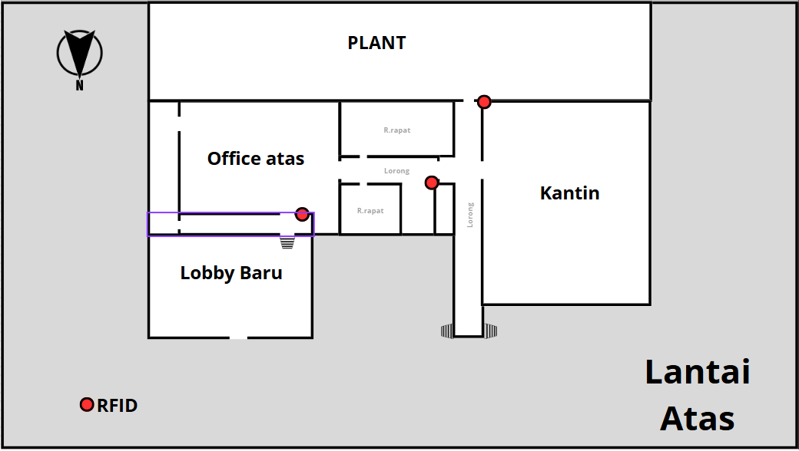
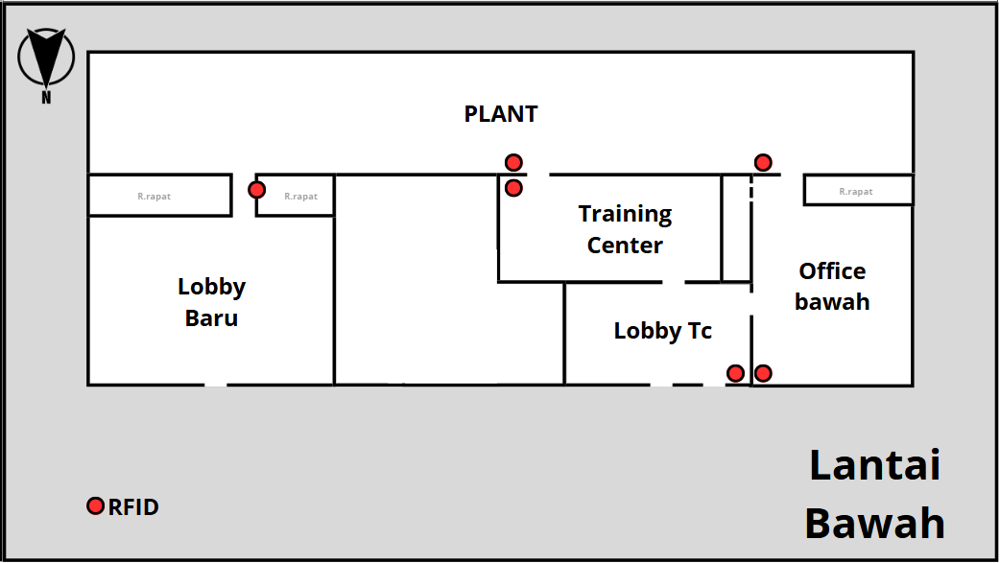

<!--
=========================================================
* Soft UI Dashboard - v1.0.3
=========================================================

* Product Page: https://www.creative-tim.com/product/soft-ui-dashboard
* Copyright 2021 Creative Tim (https://www.creative-tim.com)
* Licensed under MIT (https://www.creative-tim.com/license)

* Coded by Creative Tim

=========================================================

* The above copyright notice and this permission notice shall be included in all copies or substantial portions of the Software.
-->
<!DOCTYPE html>
<html lang="en">

<head>
  <meta charset="utf-8" />
  <meta name="viewport" content="width=device-width, initial-scale=1, shrink-to-fit=no">
  <link rel="apple-touch-icon" sizes="76x76" href="../assets/img/apple-icon.png">
  <link rel="icon" type="image/png" href="../assets/img/favicon.png">
  <title>
    Soft UI Dashboard by Creative Tim
  </title>
  <!--     Fonts and icons     -->
  <link href="https://fonts.googleapis.com/css?family=Open+Sans:300,400,600,700" rel="stylesheet" />
  <!-- Nucleo Icons -->
  <link href="../assets/css/nucleo-icons.css" rel="stylesheet" />
  <link href="../assets/css/nucleo-svg.css" rel="stylesheet" />
  <!-- Font Awesome Icons -->
  <script src="https://kit.fontawesome.com/42d5adcbca.js" crossorigin="anonymous"></script>
  <link href="../assets/css/nucleo-svg.css" rel="stylesheet" />
  <!-- CSS Files -->
  <link id="pagestyle" href="../assets/css/soft-ui-dashboard.css?v=1.0.3" rel="stylesheet" />
</head>

<body class="g-sidenav-show  bg-gray-100">
 <aside class="sidenav navbar navbar-vertical navbar-expand-xs border-0 border-radius-xl my-3 fixed-start ms-3" id="sidenav-main">
  <!-- Sidenav header remains unchanged -->
  <div class="sidenav-header">
    <i class="fas fa-times p-3 cursor-pointer text-secondary opacity-5 position-absolute end-0 top-0 d-none d-xl-none" aria-hidden="true" id="iconSidenav"></i>
    <a>
      
    </a>
  </div>
  <hr class="horizontal dark mt-0">
  <div class="collapse navbar-collapse w-auto max-height-vh-100 h-100" id="sidenav-collapse-main">
    <ul class="navbar-nav">
      <!-- Dashboard -->
      <li class="nav-item">
        <a class="nav-link " href="../pages/dashboard.html">
          <div class="icon icon-shape icon-sm shadow border-radius-md bg-white text-center me-2 d-flex align-items-center justify-content-center">
            <svg width="12px" height="12px" viewBox="0 0 24 24" version="1.1" xmlns="http://www.w3.org/2000/svg" xmlns:xlink="http://www.w3.org/1999/xlink">
              <title>dashboard</title>
              <g stroke="none" stroke-width="1" fill="none" fill-rule="evenodd">
                <g fill="#FFFFFF" fill-rule="nonzero">
                  <path class="color-background" d="M3 3h7v7H3zM14 3h7v7h-7zM3 14h7v7H3zM14 14h7v7h-7z"></path>
                </g>
              </g>
            </svg>
          </div>
          <span class="nav-link-text ms-1">Dashboard</span>
        </a>
      </li>
      <!-- Real-time Occupancy -->
      <li class="nav-item">
        <a class="nav-link active" href="../pages/real-time-ccupancy.html">
          <div class="icon icon-shape icon-sm shadow border-radius-md bg-white text-center me-2 d-flex align-items-center justify-content-center">
            <svg width="12px" height="12px" viewBox="0 0 24 24" version="1.1" xmlns="http://www.w3.org/2000/svg" xmlns:xlink="http://www.w3.org/1999/xlink">
              <title>real-time-occupancy</title>
              <g stroke="none" stroke-width="1" fill="none" fill-rule="evenodd">
                <g fill="#FFFFFF" fill-rule="nonzero">
                  <path class="color-background" d="M12 2C6.48 2 2 6.48 2 12s4.48 10 10 10 10-4.48 10-10S17.52 2 12 2zm0 18c-4.41 0-8-3.59-8-8s3.59-8 8-8 8 3.59 8 8-3.59 8-8 8zm0-14c-3.31 0-6 2.69-6 6s2.69 6 6 6 6-2.69 6-6-2.69-6-6-6z"></path>
                  <path class="color-background opacity-6" d="M12 8v4l4 2"></path>
                </g>
              </g>
            </svg>
          </div>
          <span class="nav-link-text ms-1">Real time Occupancy</span>
        </a>
      </li>
      <!-- Evacuation Status Monitor -->
      <li class="nav-item">
  <a class="nav-link" href="../pages/Evacuation-Status-Monitor.html">
    <div class="icon icon-shape icon-sm shadow border-radius-md bg-white text-center me-2 d-flex align-items-center justify-content-center">
      <svg width="12px" height="12px" viewBox="0 0 24 24" version="1.1" xmlns="http://www.w3.org/2000/svg" xmlns:xlink="http://www.w3.org/1999/xlink">
        <title>evacuation-status</title>
        <g stroke="none" stroke-width="1" fill="none" fill-rule="evenodd">
          <g fill="#FFFFFF" fill-rule="nonzero">
            <path class="color-background" d="M12 4a3 3 0 100-6 3 3 0 000 6zM12 7h-2v6h5l3-3-3-3h-3z"></path>
            <path class="color-background opacity-6" d="M18 7h4v10h-4V7z"></path>
          </g>
        </g>
      </svg>
    </div>
    <span class="nav-link-text ms-1">Evacuation Status Monitor</span>
  </a>
      <!-- Historical Occupancy -->
      <li class="nav-item">
        <a class="nav-link" href="../pages/Historical Occupancy.html">
          <div class="icon icon-shape icon-sm shadow border-radius-md bg-white text-center me-2 d-flex align-items-center justify-content-center">
            <svg width="12px" height="12px" viewBox="0 0 24 24" version="1.1" xmlns="http://www.w3.org/2000/svg" xmlns:xlink="http://www.w3.org/1999/xlink">
              <title>historical-occupancy</title>
              <g stroke="none" stroke-width="1" fill="none" fill-rule="evenodd">
                <g fill="#FFFFFF" fill-rule="nonzero">
                  <path class="color-background" d="M3 17h18v2H3zM3 12h18v2H3zM3 7h18v2H3zM5 3h14v2H5z"></path>
                  <path class="color-background opacity-6" d="M8 3v14"></path>
                </g>
              </g>
            </svg>
          </div>
          <span class="nav-link-text ms-1">Historical Occupancy</span>
        </a>
      </li>
      <!-- People Tracking -->
      <li class="nav-item">
  <a class="nav-link" href="../pages/People-Tracking.html">
    <div class="icon icon-shape icon-sm shadow border-radius-md bg-white text-center me-2 d-flex align-items-center justify-content-center">
      <svg width="12px" height="12px" viewBox="0 0 24 24" version="1.1" xmlns="http://www.w3.org/2000/svg" xmlns:xlink="http://www.w3.org/1999/xlink">
        <title>people-tracking</title>
        <g stroke="none" stroke-width="1" fill="none" fill-rule="evenodd">
          <g fill="#FFFFFF" fill-rule="nonzero">
            <path class="color-background" d="M12 4a3 3 0 100-6 3 3 0 000 6z"></path>
            <path class="color-background opacity-6" d="M12 7c-4.41 0-8 3.59-8 8v3h16v-3c0-4.41-3.59-8-8-8z"></path>
          </g>
        </g>
      </svg>
    </div>
    <span class="nav-link-text ms-1">People Tracking</span>
  </a>
</li>
      <!-- Dwell Time Analysis -->
      <li class="nav-item">
        <a class="nav-link" href="../pages/Dwell-Time-Analysis.html">
          <div class="icon icon-shape icon-sm shadow border-radius-md bg-white text-center me-2 d-flex align-items-center justify-content-center">
            <svg width="12px" height="12px" viewBox="0 0 24 24" version="1.1" xmlns="http://www.w3.org/2000/svg" xmlns:xlink="http://www.w3.org/1999/xlink">
              <title>dwell-time</title>
              <g stroke="none" stroke-width="1" fill="none" fill-rule="evenodd">
                <g fill="#FFFFFF" fill-rule="nonzero">
                  <path class="color-background" d="M12 2C6.48 2 2 6.48 2 12s4.48 10 10 10 10-4.48 10-10S17.52 2 12 2zm0 18c-4.41 0-8-3.59-8-8s3.59-8 8-8 8 3.59 8 8-3.59 8-8 8z"></path>
                  <path class="color-background opacity-6" d="M12 6v6h6"></path>
                </g>
              </g>
            </svg>
          </div>
          <span class="nav-link-text ms-1">Dwell Time Analysis</span>
        </a>
      </li>
      <!-- Anomaly Detection -->
      <li class="nav-item">
        <a class="nav-link" href="../pages/Anomaly-Detection.html">
          <div class="icon icon-shape icon-sm shadow border-radius-md bg-white text-center me-2 d-flex align-items-center justify-content-center">
            <svg width="12px" height="12px" viewBox="0 0 24 24" version="1.1" xmlns="http://www.w3.org/2000/svg" xmlns:xlink="http://www.w3.org/1999/xlink">
              <title>anomaly-detection</title>
              <g stroke="none" stroke-width="1" fill="none" fill-rule="evenodd">
                <g fill="#FFFFFF" fill-rule="nonzero">
                  <path class="color-background" d="M12 2L2 19h20L12 2zm0 3.5L19.09 17H4.91L12 5.5z"></path>
                  <path class="color-background opacity-6" d="M12 8v4m0 2h0"></path>
                </g>
              </g>
            </svg>
          </div>
          <span class="nav-link-text ms-1">Anomaly Detection</span>
        </a>
      </li>
      
</li>
</aside>
  <main class="main-content position-relative max-height-vh-100 h-100 mt-1 border-radius-lg ">
    <!-- Navbar -->
    <nav class="navbar navbar-main navbar-expand-lg px-0 mx-4 shadow-none border-radius-xl" id="navbarBlur" navbar-scroll="true">
  <div class="container-fluid py-1 px-3">
    <nav aria-label="breadcrumb">
      <ol class="breadcrumb bg-transparent mb-0 pb-0 pt-1 px-0 me-sm-6 me-5">
        <li class="breadcrumb-item text-sm"><a class="opacity-5 text-dark" href="javascript:;">Pages</a></li>
        <li class="breadcrumb-item text-sm text-dark active" aria-current="page">Real Time Ocupancy</li>
      </ol>
      <h6 class="font-weight-bolder mb-0">Real Time Ocupancy</h6>
    </nav>
    <div class="collapse navbar-collapse mt-sm-0 mt-2 me-md-0 me-sm-4" id="navbar">
      <div class="ms-md-auto pe-md-3 d-flex align-items-center">
       <div class="input-group"></div>
      </div>
      <ul class="navbar-nav justify-content-end">
        <li class="nav-item d-flex align-items-center">
          <a href="javascript:;" class="nav-link text-body font-weight-bold px-0">
            <span id="datetime" class="d-sm-inline d-none me-2"></span>
            <span class="d-sm-inline d-none">Sign In</span>
          </a>
        </li>
        <li class="nav-item d-xl-none ps-3 d-flex align-items-center">
          <a href="javascript:;" class="nav-link text-body p-0" id="iconNavbarSidenav">
            <div class="sidenav-toggler-inner">
              <i class="sidenav-toggler-line"></i>
              <i class="sidenav-toggler-line"></i>
              <i class="sidenav-toggler-line"></i>
            </div>
          </a>
        </li>
      </ul>
    </div>
  </div>
</nav>
    <!-- End Navbar -->
<div class="container-fluid py-4">
  <div class="row mb-4">
    <div class="col-md-4">
      <div class="form-group">
        <label for="departmentSelect" class="form-label text-sm font-weight-bold">Input Department</label>
        <select class="form-select" id="departmentSelect" aria-label="Select Department">
          <option selected disabled>Pilih Departemen</option>
          <option value="hr">HR</option>
          <option value="it">IT</option>
          <option value="finance">Finance</option>
          <option value="marketing">Marketing</option>
          <option value="operations">Operations</option>
        </select>
      </div>
    </div>
  </div>
  <div class="d-flex justify-content-center mb-4">
    <div id="imageCarousel" class="carousel slide" data-bs-ride="carousel" style="max-width: 1000px;">
      <div class="carousel-inner">
        <div class="carousel-item active">
          
        </div>
        <div class="carousel-item">
          
        </div>
      </div>
      <button class="carousel-control-prev" type="button" data-bs-target="#imageCarousel" data-bs-slide="prev">
        <span class="carousel-control-prev-icon" aria-hidden="true"></span>
        <span class="visually-hidden">Previous</span>
      </button>
      <button class="carousel-control-next" type="button" data-bs-target="#imageCarousel" data-bs-slide="next">
        <span class="carousel-control-next-icon" aria-hidden="true"></span>
        <span class="visually-hidden">Next</span>
      </button>
      <div class="carousel-indicators">
        <button type="button" data-bs-target="#imageCarousel" data-bs-slide-to="0" class="active" aria-current="true" aria-label="Slide 1"></button>
        <button type="button" data-bs-target="#imageCarousel" data-bs-slide-to="1" aria-label="Slide 2"></button>
      </div>
    </div>
  </div>
</div>
```
  </main>
  <!--  -->
  <!--   Core JS Files   -->
  <script src="../assets/js/core/popper.min.js"></script>
  <script src="../assets/js/core/bootstrap.min.js"></script>
  <script src="../assets/js/plugins/perfect-scrollbar.min.js"></script>
  <script src="../assets/js/plugins/smooth-scrollbar.min.js"></script>
  <script src="../assets/js/plugins/chartjs.min.js"></script>
  <script>
    var ctx = document.getElementById("chart-bars").getContext("2d");

    new Chart(ctx, {
      type: "bar",
      data: {
        labels: ["Apr", "May", "Jun", "Jul", "Aug", "Sep", "Oct", "Nov", "Dec"],
        datasets: [{
          label: "Sales",
          tension: 0.4,
          borderWidth: 0,
          borderRadius: 4,
          borderSkipped: false,
          backgroundColor: "#fff",
          data: [450, 200, 100, 220, 500, 100, 400, 230, 500],
          maxBarThickness: 6
        }, ],
      },
      options: {
        responsive: true,
        maintainAspectRatio: false,
        plugins: {
          legend: {
            display: false,
          }
        },
        interaction: {
          intersect: false,
          mode: 'index',
        },
        scales: {
          y: {
            grid: {
              drawBorder: false,
              display: false,
              drawOnChartArea: false,
              drawTicks: false,
            },
            ticks: {
              suggestedMin: 0,
              suggestedMax: 500,
              beginAtZero: true,
              padding: 15,
              font: {
                size: 14,
                family: "Open Sans",
                style: 'normal',
                lineHeight: 2
              },
              color: "#fff"
            },
          },
          x: {
            grid: {
              drawBorder: false,
              display: false,
              drawOnChartArea: false,
              drawTicks: false
            },
            ticks: {
              display: false
            },
          },
        },
      },
    });


    var ctx2 = document.getElementById("chart-line").getContext("2d");

    var gradientStroke1 = ctx2.createLinearGradient(0, 230, 0, 50);

    gradientStroke1.addColorStop(1, 'rgba(203,12,159,0.2)');
    gradientStroke1.addColorStop(0.2, 'rgba(72,72,176,0.0)');
    gradientStroke1.addColorStop(0, 'rgba(203,12,159,0)'); //purple colors

    var gradientStroke2 = ctx2.createLinearGradient(0, 230, 0, 50);

    gradientStroke2.addColorStop(1, 'rgba(20,23,39,0.2)');
    gradientStroke2.addColorStop(0.2, 'rgba(72,72,176,0.0)');
    gradientStroke2.addColorStop(0, 'rgba(20,23,39,0)'); //purple colors

    new Chart(ctx2, {
      type: "line",
      data: {
        labels: ["Apr", "May", "Jun", "Jul", "Aug", "Sep", "Oct", "Nov", "Dec"],
        datasets: [{
            label: "Mobile apps",
            tension: 0.4,
            borderWidth: 0,
            pointRadius: 0,
            borderColor: "#cb0c9f",
            borderWidth: 3,
            backgroundColor: gradientStroke1,
            fill: true,
            data: [50, 40, 300, 220, 500, 250, 400, 230, 500],
            maxBarThickness: 6

          },
          {
            label: "Websites",
            tension: 0.4,
            borderWidth: 0,
            pointRadius: 0,
            borderColor: "#3A416F",
            borderWidth: 3,
            backgroundColor: gradientStroke2,
            fill: true,
            data: [30, 90, 40, 140, 290, 290, 340, 230, 400],
            maxBarThickness: 6
          },
        ],
      },
      options: {
        responsive: true,
        maintainAspectRatio: false,
        plugins: {
          legend: {
            display: false,
          }
        },
        interaction: {
          intersect: false,
          mode: 'index',
        },
        scales: {
          y: {
            grid: {
              drawBorder: false,
              display: true,
              drawOnChartArea: true,
              drawTicks: false,
              borderDash: [5, 5]
            },
            ticks: {
              display: true,
              padding: 10,
              color: '#b2b9bf',
              font: {
                size: 11,
                family: "Open Sans",
                style: 'normal',
                lineHeight: 2
              },
            }
          },
          x: {
            grid: {
              drawBorder: false,
              display: false,
              drawOnChartArea: false,
              drawTicks: false,
              borderDash: [5, 5]
            },
            ticks: {
              display: true,
              color: '#b2b9bf',
              padding: 20,
              font: {
                size: 11,
                family: "Open Sans",
                style: 'normal',
                lineHeight: 2
              },
            }
          },
        },
      },
    });
  </script>
  <script>
    var win = navigator.platform.indexOf('Win') > -1;
    if (win && document.querySelector('#sidenav-scrollbar')) {
      var options = {
        damping: '0.5'
      }
      Scrollbar.init(document.querySelector('#sidenav-scrollbar'), options);
    }

       function updateDateTime() {
  const now = new Date();
  const options = {
    day: '2-digit',
    month: 'short',
    year: 'numeric',
    hour: '2-digit',
    minute: '2-digit',
    hour12: false
  };
  const dateTimeString = now.toLocaleString('en-GB', options).replace(',', '');
  document.getElementById('datetime').innerText = dateTimeString;
}

document.getElementById('departmentSelect').addEventListener('change', function() {
  const selectedDept = this.value;
  console.log('Departemen yang dipilih:', selectedDept);
  // Tambahkan logika untuk memproses pilihan, misalnya filter data
});

updateDateTime();
setInterval(updateDateTime, 1000);
  </script>
  <!-- Github buttons -->
  <script async defer src="https://buttons.github.io/buttons.js"></script>
  <!-- Control Center for Soft Dashboard: parallax effects, scripts for the example pages etc -->
  <script src="../assets/js/soft-ui-dashboard.min.js?v=1.0.3"></script>
</body>

</html>